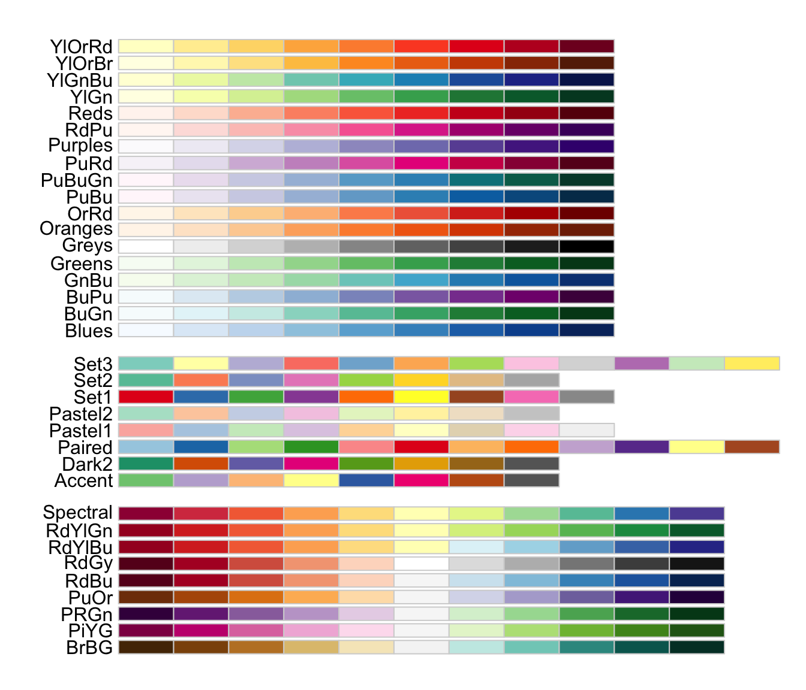

![]()

5 + 5[1] 10Week 12 – Lecture B
This is the first of a four-week series that will focus on the R language. R is a great all-round tool for data analysis and visualization. On top of that, R is probably the best environment for the “downstream” analysis of omics data, with an excellent array of packages for RNA-seq, metabarcoding, proteomics, metabolomics and many other types of data.
Specifically, you will learn:
In this lecture, you will learn:
While you can use R with a “console” that can simply be run inside the terminal, we’ll use an IDE called Positron , which makes working with it much more pleasant! You installed Positron and set up a connection to OSC in the previous lecture.
Open Positron on your computer.
On the Welcome tab, under “Recent”, click on your personal folder at OSC:
The [SSH: osc-pitzer-compute] part tells you this folder is a remote rather than a local folder.
Positron will connect to an OSC compute node, which may take a little while.
Once connected, click on the Console tab (next to the Terminal tab) and make sure there’s an active R session (the R version and other messages should be visible).
Because Positron is built on VS Code, much of it should look familiar, but it adds some important components for what we may call interactive data science work: running code line by line in a live R session, and seeing the resulting objects, plots, and documentation right away.
The Positron window has the same five main regions as VS Code:

But some of these regions have panes that aren’t in VS Code, which are highlighted in bold in the table below:
| Region | Where | What’s in it |
|---|---|---|
| Editor | Center (top) | Open scripts and other documents, in tabs |
| Panel | Center (bottom) | R Console and Terminal |
| Activity Bar | Far left | Icons that switch what the Primary Side Bar shows |
| Primary Side Bar | Left | Explorer (files), Search, Source Control, Extensions, Packages |
| Secondary Side Bar | Right | Variables, Plots, Help, Viewer, History |
Compared to VS Code, the most important additions are:
Like in VS Code, you can resize all panes, and drag them to other locations. (If you make a mess of things, you can get back to the default layout with the View: Reset View Locations command in the Command Palette.)
You can do many things in R: data manipulation, data visualization, statistical analysis, machine learning and more. Here, to get some familiarity with working in R, we will start by simply using R as a calculator.
Type 5 + 5 in the console and press Enter:
5 + 5[1] 10R will print the result of the calculation, 10. The [1] before the result is the position (index) of the first value on that line. This is helpful when R prints many values that span multiple lines.
Two more examples, using multiplication and division, respectively:
6 * 8[1] 4840 / 5[1] 8This code will work with (as shown above) or without (5+5) spaces around operators like +, but it is good practice to leave spaces to improve the readability of your code.
Exponents:
3 ^ 4[1] 81Parentheses can be used to change the default order of operations:
(5 + 3) * 2[1] 16# Without parentheses, multiplication happens first
5 + 3 * 2[1] 11When using R as a calculator, the order of operations is the same as you would have learned back in school. From highest to lowest precedence:
(, )^ or ***, /+, -The > sign in your console is the R prompt, indicating that R is ready for you to type something (this is equivalent to the $ Bash prompt that you are used to).
Also just like in the Unix shell, when you are not seeing the > prompt, R is either busy (because you asked it to do a longer-running computation) or waiting for you to complete an incomplete command.
If your prompt turned into a +, you typed an incomplete command. For example:
10 /+And once again like in the Unix shell, you can either try to finish the command or abort it. In Positron’s console, you can abort with Ctrl+C (also on a Mac) — let’s practice that here.
Comments are also just like in the Unix shell — use # signs to comment your code, both inline and on separate lines:
# This line is entirely ignored by R
10 / 5 # This line contains code but everything after the '#' is ignored[1] 2To do almost anything in R, you’ll use functions, which are the equivalent of shell commands. R comes with thousands of functions that serve many different purposes, and many more are available in over 20,000 add-on packages.
You can recognize function calls by the parentheses (). For example, the equivalent to the shell’s pwd command is the getwd() function:
# In R
getwd()[1] "/fs/ess/PAS3493/people/jelmer"# In the Unix shell
pwd/fs/ess/PAS3493/people/jelmerInside those parentheses, you can provide arguments to a function. But just like with shell commands, whether you need to provide arguments, and what they are, depends on the function. With dir.create(), the equivalent to the shell’s mkdir, the required argument is the directory you want to create:
dir.create("week12")mkdir week12And with setwd(), the equivalent to the shell’s cd, the required argument is the directory you want to switch to:
setwd("week12")getwd()[1] "/fs/ess/PAS3493/people/jelmer/week12"cd week12Two differences to note between the shell and R:
setwd(week12), without quotes?
The answer will be added after class.
The round() function rounds numbers, by default to whole numbers. For example, it rounds 6.53 to 7:
round(6.53)[1] 7In most functions, including round(), arguments have names that can be used. For example, the argument to round() that represents the number to be rounded has the name x, so you can also use the code below.
(Like in the shell, pressing the up arrow ↑ puts the previous command back in the prompt — try that, and then edit the command.)
round(x = 6.53)[1] 7Naming arguments, like in the example above, is especially helpful to avoid confusion when you pass multiple arguments to a function. For example, we can change round()’s default behavior of rounding to zero digits (whole numbers) with the optional argument digits:
round(x = 6.53, digits = 1)[1] 6.5(Note that when you use multiple arguments, they are separated by a comma, ,.)
You could choose not to name these arguments, but that isn’t as easy to understand:
round(6.53, 1)[1] 6.5Moreover, when you name arguments, you can give them in any order you want:
round(digits = 1, x = 6.53)[1] 6.5Named arguments in R are similar to options in the shell. For example, the shell’s head command has a -n option, and its R equivalent head() has an n argument:
head(iris, n = 5) Sepal.Length Sepal.Width Petal.Length Petal.Width Species
1 5.1 3.5 1.4 0.2 setosa
2 4.9 3.0 1.4 0.2 setosa
3 4.7 3.2 1.3 0.2 setosa
4 4.6 3.1 1.5 0.2 setosa
5 5.0 3.6 1.4 0.2 setosahead -n 5 metadata.tsv(Where did iris come from? It is one of several built-in datasets in R.)
Options and arguments
-n 5), which change how a command operates, from arguments (like metadata.tsv), which tell it what to operate on.head(iris, n = 5), both iris and n = 5 are arguments.Command
head or to a full line of code like head -n 5 metadata.tsv.head() is always called a function, while “command” refers only to a full line of code like head(iris, n = 5).When typing the above code, you’ve probably seen automatic help pop-ups appear several times.
For example, you can usually see which arguments a function takes by pausing after you type the function and its opening parenthesis, e.g. round(: Positron will show a pop-up with the function’s arguments, and a short description of its first argument:
And when you pause at a different argument, you should see help about that argument:
Admittedly, some of the language used in this help information can be hard to understand, especially as a beginner.
You may want to see more extensive information on how a function works and what arguments it takes. The help() function and ? help operator in R offer access to documentation pages. For example:
# Note: no parentheses here
# (this isn't a function *call*)!
?setwdThe output should appear in the Help pane in the Secondary (right-hand) Side Bar. Note that this help page covers both setwd() and getwd() (see also the box below).
?round (Click to expand)
The help page for setwd() is about as simple as they get. Most help pages are more complicated, as you can see with round():
?roundA few things you’ll run into:
Default values — digits = 0 in the Usage section means that digits has a default value of 0, which is used when you don’t provide this argument. That’s why round(6.53) rounded to a whole number.
Multiple functions on one page — Related functions often share a help page. The page for round() also covers ceiling(), floor(), trunc(), and signif(), so look for the line with your function in the Usage section.
The ... argument — This is described as “arguments to be passed to methods”, which you can ignore for now.
Technical language — Help pages are written to be precise rather than beginner-friendly. Don’t worry about understanding everything: it’s often most useful to look at the Arguments section, and the Examples section at the bottom of the page.
Part of the R help page for round().
In the shell, we’ve assigned values to variables with =, like x=1. While this is possible in R too, the customary and recommended “assignment operator” is <-:
For example:
# In R
length_cm <- 250# In the shell
length_cm=250Just like in the shell, length_cm can be called a variable. In R, though, you’ll more often hear the general term object, because R objects can take on many forms, including more complicated things like tables.
To see the contents of an object, you can use the print() function, as the equivalent of echo in the Unix shell:
print(length_cm)[1] 250echo "$length_cm"250However, in R you can omit print() and simply type an object’s name:
length_cm[1] 250Importantly, you can use objects as if you had typed their values directly:
length_cm / 2.54[1] 98.4252In the Variables pane (in the “SESSION” tab of the Secondary Side Bar), take a look at the “VALUES” section: length_cm should now be listed there, along with its contents (value):
The rules for object names in R are much like those for shell variable names:
length_inch is different from Length_Inch.x2 is valid but 2x is not.length_inch, “snake case”) or capitalization (lengthInch, “camel case”). Unlike in the shell, periods are also allowed (length.inch).As in the shell, aim for names that are descriptive but not too long, and stick to one style, such as snake case.
As you type an object or function name, Positron suggests matching names in a pop-up, and you can press Tab to accept a suggestion. Like Tab completion in the shell, this saves typing and avoids typos.
Run num_1 <- 20 and num_2 <- 15. Now predict what each of the following three lines will print, then run them one by one to check:
num_1 - num_2difference <- num_1 - num_2Num_1 + num_2length_inch <- length_cm / 2.54, and then length_cm <- 100. Do you think the value of length_inch changed when you changed length_cm? Check by printing length_inch.R packages are basically add-ons or extensions to the functionality of the R language.
The function install.packages() installs an R package. This is a one-time operation, also at OSC (see below).
The function library() will load an R package in your current R session. Every time you want to use a package in R, you need to load it, just like every time you want to use an OSC module in the shell, you need to load it.
For example, for the RColorBrewer package with color palettes for plots:
install.packages("RColorBrewer")Installing package into ‘/users/PAS0471/jelmer/R/rhel9/4.6.1’
(as ‘lib’ is unspecified)
trying URL 'https://cran.rstudio.com/src/contrib/RColorBrewer_1.1-3.tar.gz'
Content type 'application/x-gzip' length 11638 bytes (11 KB)
==================================================
downloaded 11 KB
* installing *source* package ‘RColorBrewer’ ...
** this is package ‘RColorBrewer’ version ‘1.1-3’
** package ‘RColorBrewer’ successfully unpacked and MD5 sums checked
** using staged installation
** R
** inst
** byte-compile and prepare package for lazy loading
** help
*** installing help indices
** building package indices
** testing if installed package can be loaded from temporary location
** testing if installed package can be loaded from final location
** testing if installed package keeps a record of temporary installation path
* DONE (RColorBrewer)
The downloaded source packages are in
‘/tmp/RtmpxMR47K/downloaded_packages’# This should not produce any output
library(RColorBrewer)Now, you can use the package’s functions, like display.brewer.all(), which plots all of its color palettes (the plot should appear in the Plots pane):
display.brewer.all()
At OSC, packages will by default be installed into a standard location in your Home directory, so they remain available regardless of what your working directory is, or what OSC project you are using1.
However, packages are installed separately for different versions of R2.
Instead of changing your working directory with setwd(), it is better to open a folder in Positron, like you’ve been doing in VS Code. When you open a folder, Positron makes it R’s working directory, and starts a fresh R session.
Earlier, you changed your working dir to week12 with setwd(). Instead, open the week12 folder now: use “File” > “Open Folder” and select this folder. Then, run getwd() to check that your working directory is week12:
getwd()[1] "/fs/ess/PAS3493/people/jelmer/week12"You can also start a fresh R session without switching folders, by restarting R with the restart button at the top of the Console3 — the circular arrow highlighted in this screenshot:
Click the circular arrow to restart R.
After restarting, your working directory is again the folder you opened, even if you had changed it with setwd().
Working this way builds on earlier course material, and has several advantages:
In RStudio, the equivalent of opening a folder is using an “RStudio Project”, which creates a .Rproj file in the project’s folder. If you open a folder with an .Rproj file in Positron, Positron simply ignores that file, so a folder can work both as an RStudio Project and in Positron.
So far, you’ve typed code directly in the R console. Like in the shell, that is fine for quick checks, but it’s a good idea to write and save most of your code in a file. This helps you keep track of what you’ve been doing, and to rerun your code after changing your input data or some of the code.
In the shell, we’ve been combining notes and code in Markdown files. For R, we’ll use a very similar kind of file: a Quarto document (.qmd). A Quarto document is a Markdown file with two additions:
Quarto can turn (“render”) such a document into a nicely formatted HTML file, or other formats like PDF and Word, that contains your text, your code, and your code’s output: a fully reproducible record of your analysis.
We’ll create a new document in Positron’s terminal:
Switch to the terminal tab in the bottom panel.
In the terminal, create a new Quarto document:
touch week12b.qmdOpen the file using the Explorer, or with the terminal Ctrl/Cmd-click method you know from VS Code.
You can also use one of the New file buttons (similar to VS Code), but I wanted to emphasize that you can (and should) also use a Terminal in Positron!
Type the following at the very top of your week12b.qmd:
---
title: "Week 12: R basics"
author: "<your name>"
date: 2026-11-09
---The YAML header contains settings for the document, and:
---)key: value pair per line (with a space after the colon)There are many more YAML options, some of which you’ll learn about in week 14.
Unlike in (our version of) VS Code, file changes are not auto-saved by default in Positron. When you have unsaved changes, a large dot appears next to the file name, and you can press the disk icon () or Cmd/Ctrl+S to save your changes.
If you want to change this setting, go to the Positron settings ( > Settings) and search for “Auto Save”:
In a Quarto document, everything outside of the YAML header and the code chunks is regular Markdown, like you’re used to from plain Markdown files. So, you can use headers to structure your document, and regular text to describe what your code does and why — this is how Quarto documents can be much more informative than code alone.
Add a header and a sentence below your YAML header, so that your entire document now looks like this:
week12b.qmd
---
title: "Week 12: R basics"
author: "<your name>"
date: 2026-11-09
---
## R as a calculator
R can be used as a calculator, for example to add numbers:In Markdown, you’ve been making code blocks that start with ```bash. In Quarto, you make an executable code chunk by adding curly braces around the language name, as in ```{r}.
You can insert a new chunk with Ctrl/Cmd+Shift+I, or simply type the opening and closing lines. Add a chunk to your document:
week12b.qmd
---
title: "Week 12: R basics"
author: "<your name>"
date: 2026-11-09
---
## R as a calculator
R can be used as a calculator, for example to add numbers:
```{r}
5 + 5
```If you want to run code that’s in a code chunk, you have the option to either run the:
Line your cursor is on (or the selected lines) by pressing Ctrl/Cmd+Enter
Entire chunk by clicking Run Cell just above the chunk4
Either way, the code is sent to the Console and executed there, and its output is shown in the Console too:
As mentioned earlier, code with consistent spacing is much easier to read. Positron comes with a “formatter” called Air that can tidy up your R code for you. To format the code in a chunk, put your cursor in it and run Quarto: Format Cell from the Command Palette. For example, Air would turn this:
length_cm<-250
length_inch<-round(x=length_cm/2.54,digits=1)into this:
length_cm <- 250
length_inch <- round(x = length_cm / 2.54, digits = 1)You can also have Positron format your code automatically every time you save.
To render your entire document to HTML, click the Preview button at the top right of the editor5:
This will create a file week12b.html next to week12b.qmd, and show a preview of it in the Viewer pane:
It is likely that the following pop-up will appear — if you click “Open in Browser”, the preview will also open in a new browser tab:
To update the preview after making changes, click Preview again (this is quick, since the preview server keeps running). Alternatively, check the “Render on Save” box in the editor toolbar, and the preview will update every time you save the document.
When you render, Quarto runs all code chunks from top to bottom in a new, empty R session. This means that:
This may seem annoying at times, but it helps make Quarto documents reproducible.
.R) in certain contexts (Click to expand)
Instead of Quarto documents, you can also write R code in R scripts (.R files), which contain only code and comments, much like the shell scripts you wrote in week 7. To create one, create a new file with the .R extension in the Explorer, or click File > New File... > R File. Like in Quarto documents, you can run code from R scripts with Ctrl/Cmd+Enter.
R scripts are a good choice for code that you simply want to run from start to finish, without needing a report with the output: for example, an R script can be run from the shell with Rscript my-script.R, including in a Slurm batch job. For your final project, both R scripts and Quarto documents are fine.
Continue working in your week12b.qmd:
Add another line of calculator code from earlier in this lecture to the existing chunk, and run the chunk.
Click to see a solution
For example, your chunk could now look like this:
week12b.qmd
```{r}
5 + 5
6 * 8
```When you run the chunk, the output of both lines is shown in the console.
Add a header ## Objects. Below it, add a chunk that assigns a value to an object, and another chunk that uses that object. Above each chunk, add a sentence that explains what the code does.
Click to see a solution
For example, you could add the following below your first chunk:
week12b.qmd
## Objects
Assign the value 250 to the object `length_cm`:
```{r}
length_cm <- 250
```
Convert this length to inches:
```{r}
length_cm / 2.54
```Update the preview (click Preview again, or check “Render on Save” and save the document), and take a look at it.
Click to see a solution
The preview should now show your new Objects section, with each chunk’s code followed by its output. The chunk that assigns length_cm has no output, because assignment doesn’t print.
In the console (not in your document), run my_number <- 7. Then, add a chunk with my_number * 2 to your document and update the preview again. What happens, and why?
Click to see a solution
The document will not render, and the error message will say that the object my_number was not found. This is because rendering happens in a new R session, where only objects created in the document itself exist. To fix this, assign my_number in a chunk in your document.
In this lecture, you’ve learned the basics of working with R and Positron, including:
Next week, you’ll learn about vectors, R’s main data types, and tabular data. For that and all later R lectures, you’ll write your code in Quarto documents.
Installing the R package for next week takes several minutes, so let’s get that started now. Run the following code in the R console:
install.packages("tidyverse")Then, let it run: keep Positron open until the installation has finished, which is when you see the > prompt again in the console. If the installation doesn’t finish before the end of class, or you weren’t able to start it, please make sure to run it before next week’s class.
This works equivalently on your own computer.↩︎
So, when you switch to a different R version, you may have to start over with package installation.↩︎
You can also use the keyboard shortcut Shift+Cmd+0 (Mac) or Shift+Ctrl+0 (Windows).↩︎
Or pressing Ctrl/Cmd+Shift+Enter.↩︎
Or press Ctrl/Cmd+Shift+K.↩︎